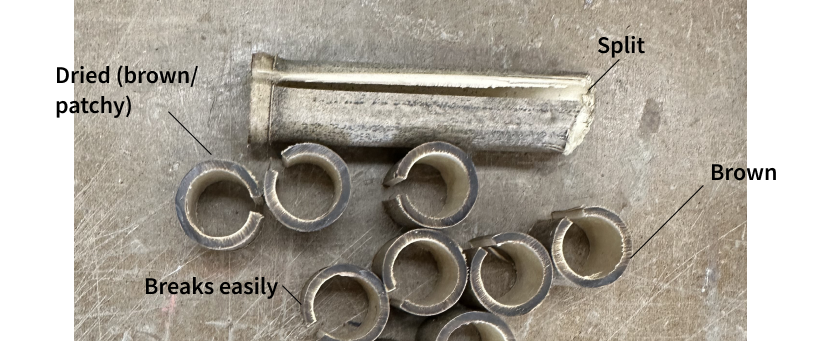
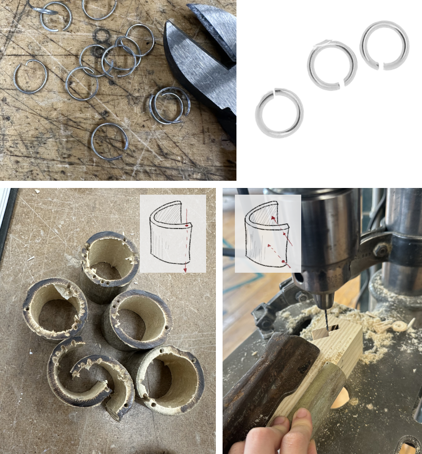
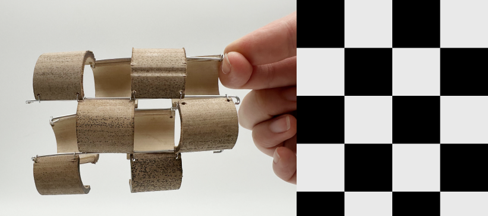
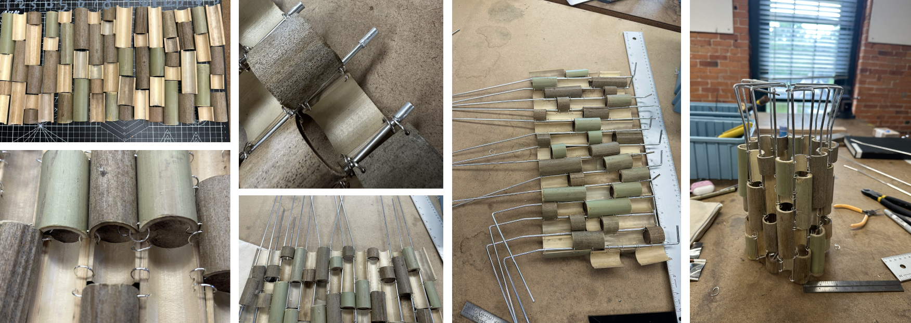
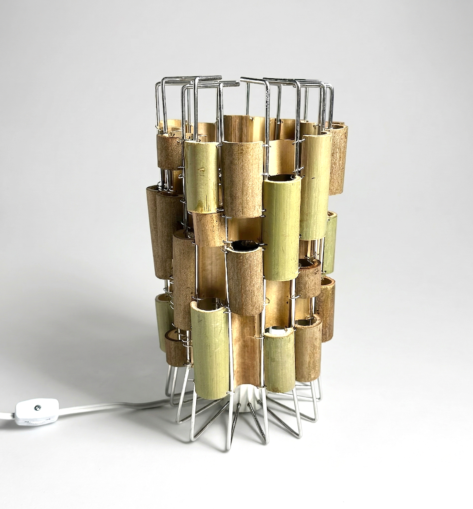

Bamboo Lamp
Spring 2025
Challenge:
Explore how material research can drive design while finding alternative ways to reuse unwanted natural materials for sustainability. Understand the physical properties, strengths, and limitations of reclaimed bamboo.
Design:
Conducted iterative experiments with bamboo sourced from Seven Arrows Farm in Providence, testing various forms, structures, and combinations. Insights from these hands-on explorations informed the creation of a final lamp that directly reflects the material's characteristics.
Outcome:
Produced a functional lamp that embodies the results of material-driven research, demonstrating how experimental making can translate deep material understanding into a tangible, sustainable, design-forward object.

1.Procurement of material and
preparation

Through connections with local manufacturers, we sourced reclaimed bamboo from a farm in Rhode Island as the primary material for this project.

The collected bamboo was dried, naturally split, and varied in tone. I embraced these imperfections, using existing splits as guides to bandsaw the material into smaller units, establishing a foundation for iterative exploration.

2.Iteration Process

Given the small size of each bamboo unit, jump rings were selected as the connection method. I tested drilling both parallel to the bamboo walls and perpendicular across the strips. The parallel approach caused frequent splitting, leading to the adoption of the perpendicular method for improved structural reliability.
Iteration group 1

Early experiments explored forms, structure patterns, and connection methods.

The concave and convex surfaces of the bamboo create a dynamic checkered texture. Therefore, in the second iteration, I explored alternating the inner and outer faces of bamboo segments to develop varied surface compositions.
Iteration group 2


Placement and shaping of bamboo elements interacted with light and shadow, producing compelling visual effects that informed the final design.
3.Final Production
Production Process

Bamboo pieces are cut to size, drilled, and connected with jump rings. Metal rods thread through the rings to form the structure, while an aluminum topper secures the connections in place. The rods are then bent into shape, and a light bulb is installed at the center.
Final Photos
